DD8 — Hệ thống điều khiển¶
Hệ tiền đình, Cảm giác bản thể, Thị giác và sự thích nghi của cơ thể tuổi 50+
📋 SƠ ĐỒ TÀI LIỆU¶
Hệ thống điều khiển là lớp thứ 3 của chuỗi động lực (sau nền tảng từ DD1, cấu trúc từ DD2–DD7). Đó là phần làm cho quần vợt trở nên khả thi — không có tín hiệu tiền đình, cảm giác bản thể và thị giác, cơ thể không thể quyết định Ở ĐÂU và KHI NÀO di chuyển.
Nội dung trình bày: hệ tiền đình (ống bán khuyên + cơ quan thạch nhĩ + đường dẫn thần kinh), cảm giác bản thể (cảm giác vị trí khớp + 7.000 tận cùng thần kinh + thoi cơ), thị giác (chu trình thị giác 5 giai đoạn), bộ ba giác quan tuổi 50+ (suy giảm tiền đình + thị giác + bản thể), và mô hình 4 hệ thống điều khiển.
Không trình bày: cơ chế kỹ thuật cú đánh (đào sâu Thuận tay/Trái tay/Giao bóng), tâm lý thi đấu (một mối quan tâm riêng), kế hoạch tập luyện (mối quan tâm riêng).
Thời gian đọc: 40–50 phút.
📑 MỤC LỤC¶
| # | Chương |
|---|---|
| 1 | 4 Hệ thống điều khiển — Thị giác, Tiền đình, Cảm giác bản thể, Thính giác |
| 2 | Hệ tiền đình — Nơi cân bằng ngự trị |
| 3 | Chu trình thị giác 5 giai đoạn — Cách tay chuyên nghiệp đọc bóng |
| 4 | Cảm giác bản thể — Giác quan thầm lặng 7.000 dây thần kinh |
| 5 | Tầng thời gian phản ứng — 3 lớp |
| 6 | Bộ ba giác quan tuổi 50+ — Tại sao phản ứng chậm lại |
| 7 | 4 bài tập điều khiển chuyên biệt quần vợt |
Chương 1 — 4 hệ thống điều khiển (Thị giác, Tiền đình, Cảm giác bản thể, Thính giác)¶
Cơ thể người có 4 hệ thống điều khiển hoạt động song song để tạo ra cử động quần vợt. Đó là: THỊ GIÁC (bóng đi đâu), TIỀN ĐÌNH (đầu ở đâu trong không gian), CẢM GIÁC BẢN THỂ (các bộ phận cơ thể tương đối với nhau ra sao), và THÍNH GIÁC (khi bóng chạm vợt).
4 hệ thống này chồng lấp và hỗ trợ lẫn nhau. Khi một hệ suy yếu, các hệ khác bù đắp. Khi hai hệ suy yếu, hệ thống sụp đổ.
4 hệ thống điều khiển¶
| # | Hệ thống | Chức năng | Vai trò quần vợt | Suy giảm 50+ |
|---|---|---|---|---|
| 1 | Thị giác | Bóng đi đâu. Đối thủ đang ở đâu. | Đọc cú giao bóng. Bám bóng. Thấy khoảng sân trống. | Thủy tinh thể cứng lại (lão thị). Độ nhạy tương phản giảm. |
| 2 | Tiền đình | Đầu ở đâu trong không gian. Bạn đang xoay? Tăng tốc? Nghiêng? | Cân bằng khi bước tách. Phục hồi từ tư thế mất thăng bằng. Định hướng khi đánh overhead. | Tế bào lông trong ống bán khuyên suy giảm. Lỗi thăng bằng tăng. |
| 3 | Cảm giác bản thể | Các bộ phận cơ thể ở đâu. Không cần nhìn. | "Cảm nhận" cán vợt. Đánh mà không nhìn bóng. Tự động điều chỉnh bước chân. | Ít hơn 30% tận cùng thần kinh ở lòng bàn chân lúc 65. Cảm giác vị trí khớp suy giảm. |
| 4 | Thính giác | Khi bóng chạm. Âm thanh mặt vợt ra sao. Hướng cú đánh của đối thủ. | Đúng nhịp tiếp xúc. Nghe mặt vợt (điểm ngọt hay lệch tâm). | Ít quan trọng hơn với quần vợt. Mất thính lực tần số cao một phần. |
Thứ bậc của 4 hệ thống¶
THỊ GIÁC là hệ thống CHÍNH. Nó hoạt động ~150 ms trước nhận thức có ý thức. Nó lập kế hoạch cử động.
TIỀN ĐÌNH là hệ thống ĐỊNH HƯỚNG. Nó cập nhật vị trí cơ thể trong không gian mọi lúc. Hoạt động song song với thị giác.
CẢM GIÁC BẢN THỂ là hệ thống THỰC THI. Nó tinh chỉnh cử động dựa trên phản hồi từ khớp, gân và bàn chân. Hoạt động NHANH HƠN cả hai (~30 ms).
THÍNH GIÁC là hệ thống THỜI ĐIỂM. Nó cung cấp "khi nào" — khoảnh khắc tiếp xúc.
Nguồn: Anatomy_He_Tien_Dinh_Full.docx cho hệ tiền đình. Tennis Anatomy Ch.1, Ch.9 cho các bài tập vận động.
Chương 2 — Hệ tiền đình (Nơi cân bằng ngự trị)¶
Hệ tiền đình nằm sâu trong xương đá của hộp sọ, ở tai trong. Nó là một phần của mê đạo cùng với ốc tai (thính giác). Hệ tiền đình KHÔNG nghe. Nó cảm nhận CHUYỂN ĐỘNG và VỊ TRÍ.
Nguồn của người dùng giải thích: "Hệ tiền đình nằm sâu trong xương đá của hộp sọ, thuộc tai trong, ngay sau ốc tai thính giác. Khác với ốc tai nhận âm thanh, tiền đình không tạo cảm giác." (Hệ tiền đình nằm sâu trong xương đá của hộp sọ, ở tai trong, ngay sau ốc tai. Khác với ốc tai nhận âm thanh, hệ tiền đình không tạo ra cảm giác.)
5 thành phần của hệ tiền đình¶
| # | Thành phần | Giải phẫu | Cảm nhận |
|---|---|---|---|
| 1 | Ba ống bán khuyên | Trước, sau, ngang. Mỗi ống vuông góc với các ống khác. | Gia tốc góc (xoay). 3 ống phát hiện xoay trên 3 mặt phẳng. |
| 2 | Túi tiền đình | Một trong hai cơ quan thạch nhĩ. Nằm NGANG. | Gia tốc tuyến tính ngang + nghiêng đầu. |
| 3 | Túi bầu dục | Cơ quan thạch nhĩ còn lại. Nằm DỌC. | Gia tốc tuyến tính dọc (vd. thang máy). |
| 4 | Tế bào lông (Loại I + II) | Trong ống và thạch nhĩ. Có roi chuyển + 40–70 vi nhung. | Sự lệch của vi nhung tạo tín hiệu thần kinh. |
| 5 | Vòm (cupula) | Cấu trúc dạng thạch trong mỗi ống. Tế bào lông cắm vào đó. | Khi nội dịch di chuyển, vòm uốn cong, tế bào lông bắn tín hiệu. |
Đường dẫn thần kinh¶
| Giai đoạn | Giải phẫu | Chức năng |
|---|---|---|
| Thụ thể | Tế bào lông trong bóng quản ống | Chuyển đổi cơ học sang điện |
| Dây thần kinh hướng tâm | Nhánh tiền đình của dây thần kinh sọ VIII (tiền đình-ốc tai) | Truyền tín hiệu đến thân não |
| Nhân thân não | 4 nhân tiền đình ở cầu não | Tích hợp đầu tiên. Gửi đến tiểu não, tủy sống, mắt, vỏ não |
| Tiểu não | Nhận tín hiệu tiền đình + bản thể + thị giác | Phối hợp thăng bằng |
| Vỏ não | Thùy đỉnh + thái dương | Nhận thức có ý thức về vị trí cơ thể |
| Tủy sống | Bó tiền đình-tủy | Điều chỉnh trương lực cơ để duy trì tư thế |
4 đường dẫn xuất từ nhân tiền đình¶
| Đường dẫn | Đích | Chức năng | Vai trò quần vợt |
|---|---|---|---|
| 1. Đến cơ mắt (dây III, IV, VI) | Cơ ngoài nhãn cầu | Phản xạ tiền đình-thị giác (VOR) — giữ mắt ổn định khi đầu di chuyển | Nhìn rõ bóng khi đầu di chuyển |
| 2. Đến tủy sống | Tế bào sừng trước (nơ-ron vận động) | Tự động điều chỉnh tư thế cơ thể | Duy trì thăng bằng khi bước tách |
| 3. Đến tiểu não | Tiểu não tiền đình (thùy cuống-nút) | Phối hợp cử động | Đường vợt mượt mà |
| 4. Đến vỏ não | Thùy đỉnh | Nhận thức có ý thức về định hướng | Biết đâu là trên khi đánh overhead |
Phản xạ 30 ms — Tiền đình nhanh đến mức nào?¶
Phản xạ tiền đình-thị giác (VOR) bắn trong 30 mili-giây. Nó hoạt động TRƯỚC nhận thức có ý thức. Khi bạn xoay đầu, mắt di chuyển ngược hướng — TỨC THÌ — để giữ thế giới thị giác ổn định.
Điều này NHANH HƠN thời gian phản ứng của quả bóng quần vợt (~150 ms). Nó cho phép người chơi bám bóng mượt mà ngay cả khi xoay đầu nhanh.
Sự thật tuổi 50+: VOR suy giảm ~10–15% lúc 65 tuổi. Hậu quả: khi bạn xoay đầu, thế giới thị giác dường như "trượt" trong thoáng chốc trước khi ổn định. Bạn thấy chóng mặt. Bóng trở nên mờ trong lúc xoay đầu.
Cách khắc phục: phục hồi chức năng tiền đình. Bài tập "ổn định ánh mắt". Tập trung vào một điểm cố định, xoay đầu qua lại trong khi giữ mắt vào điểm đó. 1 phút × 3 lần/ngày.
Nguồn: Anatomy_He_Tien_Dinh_Full.docx (toàn bộ tài liệu). Tham chiếu: sách sinh lý tiền đình chuẩn.
Chương 3 — Chu trình thị giác 5 giai đoạn (Cách tay chuyên nghiệp đọc bóng)¶
Tay chuyên nghiệp không "nhìn" bóng như người chơi phong trào. Họ dùng chu trình thị giác 5 giai đoạn xảy ra TRƯỚC tiếp xúc. Chu trình nhanh (tổng 150-250 ms), tự động (không cần suy nghĩ có ý thức) và có thể luyện tập.
5 giai đoạn | 5 Pha¶
| # | Giai đoạn | Diễn biến | Thời lượng |
|---|---|---|---|
| 1 | Cảm nhận rộng (Mắt mềm) | Mắt "thấm" toàn bộ sân. Thị giác ngoại vi hoạt động. | ~50 ms |
| 2 | Khóa mục tiêu | Mắt tập trung vào bóng. Bắt đầu bám. | ~30 ms |
| 3 | Tập trung hẹp (Thị giác đường hầm) | Mắt chỉ theo bóng. Thị giác ngoại vi bị ức chế. | ~80–120 ms |
| 4 | Mắt tĩnh lặng tại tiếp xúc | Mắt VẪN dán vào bóng 100+ ms sau tiếp xúc. Sự cố định lâu nhất. | ~100–200 ms |
| 5 | Mở rộng lại | Mắt thả. Thị giác ngoại vi trở lại. Chuẩn bị cú tiếp theo. | ~50 ms |
Hiện tượng Mắt tĩnh lặng — Chìa khóa của thị giác chuyên nghiệp¶
"Mắt tĩnh lặng" là sự cố định lâu nhất vào bóng SAU tiếp xúc. Nghiên cứu cho thấy vận động viên ưu tú có thời gian Mắt tĩnh lặng ~200+ ms. Người chơi phong trào chỉ ~50 ms.
Tại sao quan trọng: Mắt tĩnh lặng là lúc não xử lý phản hồi từ tiếp xúc — có trúng điểm ngọt không? Mặt vợt có mở không? Phản hồi này vòng vào chương trình vận động của cú tiếp theo. KHÔNG có Mắt tĩnh lặng, não không học được từ mỗi cú đánh.
Suy giảm tuổi 50+: Mắt tĩnh lặng ngắn lại theo tuổi. Lúc 60, trung bình ~100 ms. Lúc 70, ~70 ms. Người chơi trên 50 học chậm hơn từ mỗi cú đánh.
Cách luyện tập: "Giữ ánh mắt". Sau mỗi cú đánh khi tập, giữ mắt vào điểm tiếp xúc trong 3 GIÂY (3000 ms). Dạy não rằng "nhìn lâu hơn" là được phép. Sau 4 tuần, thời gian Mắt tĩnh lặng tự nhiên kéo dài.
3 lỗi thị giác trong quần vợt¶
| # | Lỗi | Biểu hiện | Cách khắc phục |
|---|---|---|---|
| 1 | Nhìn đối thủ, không nhìn bóng | Mắt dán vào thân người giao bóng khi tung bóng. Mắt vào vai người đánh. | Bám BÓNG từ vợt đến tiếp xúc. |
| 2 | Cúi đầu lúc tiếp xúc | Mắt cụp xuống sàn sau khi đánh. Không có Mắt tĩnh lặng. | Bài tập "Giữ ánh mắt". Ánh mắt giữ ở điểm tiếp xúc. |
| 3 | Tập trung hẹp quá sớm | Mắt ghim vào bóng đến quá sớm. Mất thông tin ngoại vi về vị trí đối thủ. | Dùng chu trình 5 giai đoạn. Mắt mềm → khóa → đường hầm → mắt tĩnh lặng → mở rộng lại. |
Nguồn: Tennis Anatomy Ch.9 (Bài tập vận động). Tham chiếu: nghiên cứu Mắt tĩnh lặng của TS. Joan Vickers.
Chương 4 — Cảm giác bản thể (Giác quan thầm lặng 7.000 dây thần kinh)¶
Cảm giác bản thể là cảm giác vị trí cơ thể KHÔNG cần nhìn. Đó là cảm giác giúp bạn chạm mũi khi nhắm mắt. Là cảm giác giúp bạn biết đầu vợt ở đâu khi giật lùi. Đó là giác quan THẦM LẶNG — bạn chỉ chú ý khi nó hỏng.
Cảm giác bản thể có 3 nguồn đầu vào:
-
Thụ thể khớp — tận cùng Ruffini, tiểu thể Pacini trong bao khớp
-
Thoi cơ — sợi chuyên biệt trong cơ cảm nhận sự căng giãn
-
Thụ thể da — đặc biệt ở lòng bàn chân (7.000+) và lòng bàn tay
3 nguồn đầu vào bản thể¶
| Nguồn | Vị trí | Cảm nhận | Ý nghĩa quần vợt |
|---|---|---|---|
| Thụ thể khớp | Trong bao khớp | Góc khớp, cử động khớp, vị trí tầm cuối | "Khuỷu tay tôi ở 90°" không cần nhìn |
| Thoi cơ | Trong cơ (song song với sợi ngoài bó) | Chiều dài cơ và tốc độ thay đổi | "Cơ nhị đầu đang co" — để điều chỉnh cán nắm |
| Thụ thể da | Trong da, đặc biệt lòng bàn chân và lòng bàn tay | Áp lực, căng giãn, rung động | "Tôi đang ép qua ngón chân cái" khi đẩy người |
Suy giảm cảm giác bản thể tuổi 50+ — 3 con số¶
| Con số | Ý nghĩa | Hệ quả quần vợt |
|---|---|---|
| 30% | Ít hơn 30% tận cùng thần kinh ở lòng bàn chân lúc 65 | Giảm nhận biết bàn chân. Mất nhận biết chân tam giác. |
| 20% | Giảm độ nhạy thoi cơ lúc 70 | Tự động điều chỉnh chậm hơn. Cần nhiều "suy nghĩ" hơn. |
| 40% | Giảm cảm giác vị trí khớp ở gối lúc 70 | Bước chân kém chính xác hơn. Dễ vấp hơn. |
4 bài tập luyện cảm giác bản thể¶
| # | Bài tập | Huấn luyện | Độ khó |
|---|---|---|---|
| 1 | Đứng một chân (mở mắt) | Cảm giác bản thể bàn chân + cổ chân | Dễ |
| 2 | Đứng một chân (nhắm mắt) | Tiền đình + bản thể bàn chân | Trung bình |
| 3 | Đứng một chân trên mút xốp (nhắm mắt) | Tiền đình + bản thể bàn chân + phản xạ | Khó |
| 4 | Đi chân không trên mặt gồ ghề (cỏ, cát) | Cảm giác bản thể đa khớp | Dễ |
Nguồn: Tennis Anatomy Ch.9 (Bài tập vận động). Nguồn người dùng: Giai_phau_Ban_chan_Tennis.docx Ch.7 (7.000 tận cùng thần kinh).
Chương 5 — Tầng thời gian phản ứng (3 lớp)¶
Thời gian phản ứng quần vợt có 3 LỚP, mỗi lớp thêm độ trễ. "Thời gian phản ứng cảm nhận" tổng cộng 400-500 ms là tổng của cả 3 lớp.
3 lớp phản ứng¶
| # | Lớp | Diễn biến | Thời lượng | Vị trí |
|---|---|---|---|---|
| 1 | Phát hiện kích thích | Mắt thấy bóng di chuyển. Tiền đình phát hiện xoay đầu. Bản thể cảm nhận vị trí cơ thể. | ~150 ms | Cơ quan giác quan → tủy sống / thân não |
| 2 | Ra quyết định | Não quyết định: thuận tay hay trái tay? Sang trái hay phải? Tấn công hay phòng thủ? | ~150-200 ms | Vỏ não |
| 3 | Đáp ứng vận động | Não gửi tín hiệu đến cơ. Cơ co. Cử động bắt đầu. | ~100-150 ms | Vỏ não vận động → tủy sống → cơ |
| Tổng | ~400-500 ms |
Lớp quyết định — Biến số lớn nhất¶
Với người chơi có kinh nghiệm, LỚP QUYẾT ĐỊNH là biến số lớn nhất. Người chơi 3.5 có thể mất 250 ms để quyết định. Người chơi 4.5 mất 150 ms. Lớp phát hiện và lớp vận động không thay đổi nhiều.
Lớp quyết định là thứ bạn luyện tập bằng SỰ LẶP LẠI. Khi bạn đã đánh 10.000 cú thuận tay, quyết định "thuận tay" trở nên tự động — nó bỏ qua lớp ra quyết định có ý thức. Quyết định chỉ mất ~50 ms thay vì 250 ms.
Hệ quả tuổi 50+: ra quyết định chậm lại theo tuổi. Tốc độ xử lý của não giảm ~10–15% lúc 65. "Lớp quyết định" của người chơi trên 50 chậm hơn. Cách khắc phục là NHẬN BIẾT KỊCH BẢN — luyện các tình huống cụ thể cho đến khi tự động.
3 chiến lược cải thiện lớp phản ứng¶
| Lớp | Chiến lược | Bài tập |
|---|---|---|
| Phát hiện | Sắc bén thị giác + bản thể | Luyện Mắt tĩnh lặng. Đứng một chân. |
| Quyết định | Nhận biết kịch bản + bài tập tình huống | Kịch bản 100 bóng: huấn luyện viên đánh 5 vùng, người chơi gọi tên. |
| Vận động | Tự động hóa chương trình vận động | Swing giả. Quy trình 1.000 lần lặp. |
Nguồn: Tennis Anatomy Ch.9 (Bài tập vận động). Tham chiếu: nghiên cứu thời gian phản ứng.
Chương 6 — Bộ ba giác quan tuổi 50+ (Tại sao phản xạ chậm lại)¶
Người chơi tuổi 50+ có BA sự suy giảm giác quan xảy ra đồng thời: thị giác, tiền đình và bản thể. Mỗi cái làm tăng độ trễ. Cùng nhau, chúng có thể khiến thời gian phản xạ tăng gấp đôi.
Người dùng nói rõ: "Khả năng thích nghi qua vận động" (Thích nghi qua vận động). Hệ tiền đình có cơ chế bù trừ trung ương — vận động lặp lại giúp hiệu chỉnh lại nó. Tránh né khiến tình trạng tồi tệ hơn.
3 sự suy giảm giác quan — Những con số¶
| Hệ thống | Suy giảm khi 65 tuổi | Tác động quần vợt | Điều bạn nhận thấy |
|---|---|---|---|
| Thị giác | Mất 20–30% độ nhạy tương phản. Thủy tinh thể cứng lại (lão thị). Đồng tử nhỏ hơn (ít ánh sáng hơn). | Khó thấy bóng trong ánh sáng yếu. Khó đọc độ xoáy. | "Tôi không còn đọc được cú giao bóng như trước." |
| Tiền đình | VOR giảm 10–15%. Tế bào lông trong các ống bán khuyên giảm. | Ổn định tầm nhìn chậm hơn. Hơi chóng mặt khi xoay nhanh. | "Thế giới trượt đi khi tôi xoay đầu." |
| Bản thể | Ít hơn 30% đầu mút thần kinh ở bàn chân. Độ nhạy thoi cơ giảm 20%. | Ít nhận biết bàn chân hơn. Tự động điều chỉnh chậm hơn. | "Tôi vấp ngã nhiều hơn trước." |
Hiệu ứng cộng gộp — Thời gian phản xạ tăng gấp đôi¶
Ở tuổi 25: thời gian phản xạ = 400 ms. Bóng đến trong 400 ms. Bạn có thể trả cú giao bóng 100 mph.
Ở tuổi 50: thời gian phản xạ = 500 ms. Bóng vẫn đến trong 400 ms. Bạn vừa ĐỦ sức trả cú giao bóng 100 mph.
Ở tuổi 65: thời gian phản xạ = 600 ms. Bạn không thể trả cú giao bóng 100 mph. Bạn có thể trả cú giao bóng 70–80 mph.
Cách khắc phục KHÔNG phải là từ bỏ quần vợt. Cách khắc phục là: (1) đánh với đối thủ đánh vừa nhịp độ của bạn (đánh đôi, đánh hỗn hợp), (2) định vị trước (phủ sóng ít sân hơn), (3) dùng 4 bài tập kiểm soát bên dưới để làm chậm sự suy giảm.
Nguyên lý tính dẻo — Tại sao tránh né khiến tình trạng tồi tệ hơn¶
Nguồn của người dùng nói rất đúng: "Tránh né làm yếu. Học qua sử dụng." (Tránh né làm yếu đi. Học qua sử dụng.)
Bộ não thay đổi dựa trên CÁCH SỬ DỤNG. Dùng hệ tiền đình lặp lại → nó thích nghi, hiệu chỉnh lại, tăng mật độ khớp thần kinh. Tránh kích thích tiền đình → nó suy yếu, trở nên NHẠY CẢM HƠN với những xáo trộn nhỏ.
Người chơi tuổi 50+ ngừng chơi quần vợt vì "chóng mặt" hoặc "vấn đề thăng bằng" → hệ tiền đình suy yếu thêm → CHÓNG MẶT NHIỀU HƠN → TRÁNH NÉ NHIỀU HƠN → vòng lặp ác tính.
Người chơi tuổi 50+ TIẾP TỤC chơi quần vợt cùng các bài tập tiền đình → hệ tiền đình thích nghi → chóng mặt giảm → sự tự tin tăng → chơi quần vợt nhiều hơn → vòng lặp tích cực.
Nguồn: Anatomy_He_Tien_Dinh_Full.docx Ch.7 (Tính dẻo và phục hồi). Tham chiếu: tài liệu về thích nghi tiền đình.
Chương 7 — 4 bài tập kiểm soát chuyên biệt cho quần vợt¶
| Bài tập | Đào tạo gì | Tần suất | Thời gian có tác dụng |
|---|---|---|---|
| 1. Ổn định tầm nhìn | VOR (phản xạ tiền đình–nhãn cầu) | Hàng ngày, 1 phút × 3 | 2–3 tuần để thấy cải thiện rõ rệt |
| 2. Đứng một chân (nhắm mắt) | Tiền đình + bản thể bàn chân | Hàng ngày, 30 giây × 3 mỗi bên | 4–6 tuần để giảm nguy cơ ngã |
| 3. Nhận biết hình mẫu (100 bóng) | Tự động hóa tầng quyết định | 2×/tuần | 8–12 tuần để tăng tốc độ quyết định |
| 4. Đi chân trần trên mặt gồ ghề | Bản thể đa khớp + cơ bụng bàn chân | Hàng ngày, 5 phút | 4 tuần để tăng sức mạnh nội tại |
Bài 1 — Ổn định tầm nhìn (Tập VOR)¶
| Bước | Hướng dẫn |
|---|---|
| 1 | Đứng cách tường 2 feet. Đặt mục tiêu (giấy note) ngang tầm mắt. |
| 2 | Giữ mắt vào mục tiêu. Xoay đầu trái-phải 30° với tốc độ vừa phải. |
| 3 | Mắt GIỮ NGUYÊN trên mục tiêu. Thế giới không trượt. |
| 4 | Tiếp tục trong 1 phút. Nghỉ 30 giây. Lặp lại 3×. |
| 5 | Tiến triển: xoay đầu NHANH HƠN. Sau đó thêm chiều dọc (lên-xuống). Sau đó thêm đi bộ. |
Bài 2 — Đứng một chân (Nhắm mắt)¶
| Bước | Hướng dẫn |
|---|---|
| 1 | Đứng chân trần gần tường (để an toàn). |
| 2 | Nâng một chân lên vài inch. |
| 3 | Nhắm mắt. Nhờ bạn bè bấm giờ. |
| 4 | Giữ thăng bằng. Dừng khi cần bước xuống. |
| 5 | 3 hiệp × 30 giây mỗi bên, hàng ngày. |
Bài 3 — Nhận biết hình mẫu (100 bóng)¶
| Bước | Hướng dẫn |
|---|---|
| 1 | Huấn luyện viên (hoặc bạn) đánh bóng vào 5 vùng: ngắn, sâu, trái, phải, giữa. |
| 2 | Người chơi gọi tên vùng TRƯỚC khi bóng đến. |
| 3 | Ghi lại số vùng được gọi đúng. |
| 4 | Tiến triển: tăng tốc độ. Thêm biến thể độ xoáy. |
| 5 | Mục tiêu: 90% gọi đúng trong <300 ms. |
Bài 4 — Đi chân trần trên mặt gồ ghề¶
| Bước | Hướng dẫn |
|---|---|
| 1 | Đi chân trần trên cỏ, cát hoặc thảm có kết cấu. |
| 2 | Chậm rãi. Cảm nhận sự tiếp xúc của từng bàn chân. |
| 3 | 5 phút mỗi ngày. |
| 4 | Tiến triển: thêm mặt gồ ghề (sỏi, mút xốp). Thêm đi dốc. |
Nguồn: Tennis Anatomy Ch.9 (Bài tập vận động). Tham chiếu: tài liệu huấn luyện thăng bằng, nghiên cứu VOR.
📋 THẺ DD8 — In được¶
Quần vợt cần 4 hệ thống điều khiển: thị giác, tiền đình, bản thể, thính giác. Sự suy giảm tuổi 50+ là 20–30% ở mỗi hệ thống. SỬ DỤNG duy trì, TRÁNH NÉ làm yếu đi. Tiếp tục chơi quần vợt — đó là sự thích nghi tiền đình.
- 4 hệ thống điều khiển: thị giác, tiền đình, bản thể, thính giác
- Chu trình thị giác 5 pha (mắt mềm → mắt tĩnh lặng → mở rộng)
- Thời gian mắt tĩnh lặng: người chuyên nghiệp 200+ ms, người chơi 50+ 100 ms
- Phản xạ VOR: 30 ms (nhanh hơn nhận thức có ý thức)
- Thời gian phản xạ: 25 tuổi = 400ms, 50 tuổi = 500ms, 65 tuổi = 600ms
- Ít hơn 30% đầu mút thần kinh ở gan bàn chân khi 65 tuổi
- Tế bào lông tiền đình giảm ~10–15% khi 65 tuổi
Ngừng chơi quần vợt vì "chóng mặt" hoặc "vấn đề thăng bằng". Tránh né làm hệ tiền đình suy yếu thêm. Vòng lặp tích cực: tiếp tục chơi + bài tập ổn định tầm nhìn + bài tập thăng bằng = thích nghi.
- Ổn định tầm nhìn: tập trung vào mục tiêu, xoay đầu qua lại. 1 phút × 3/ngày.
- Đứng một chân nhắm mắt: 30 giây × 3 mỗi bên, hàng ngày.
- Nhận biết hình mẫu (100 bóng): gọi tên vùng trước khi bóng đến. 2×/tuần.
- Đi chân trần trên cỏ hoặc cát: 5 phút mỗi ngày.
"Dùng thì còn, không dùng thì mất. Tiếp tục chơi."
🖼️ HÌNH MINH HỌA¶
96 hình ảnh có sẵn trong Anatomy_Lab/images/DD8_control_system/ (48 từ Anatomy_He_Tien_Dinh_Full.docx + 48 từ Tennis Anatomy PDF).
Hình 4–9 — Chức năng tiền đình (Định hướng, Phát hiện tốc độ, Hướng)¶
| Hình | Mô tả | Ảnh |
|---|---|---|
| 4 | Nhấn mạnh chức năng thăng bằng, định hướng không gian | |
| 5 | Vùng não nhận tín hiệu — tiểu não + nhân tiền đình | |
| 6 | Hệ thống báo cho não biết đầu ở đâu | |
| 7 | Đo tốc độ chuyển động của đầu | 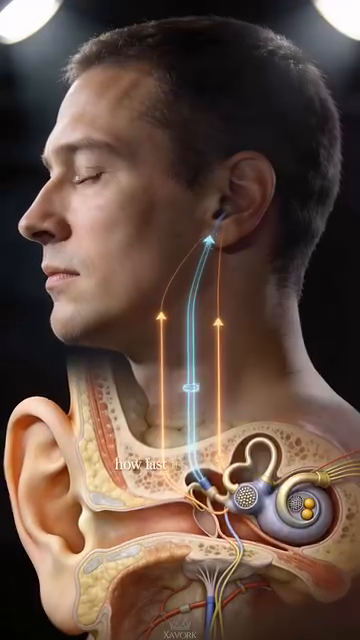 |
| 8 | Xác định hướng chuyển động | 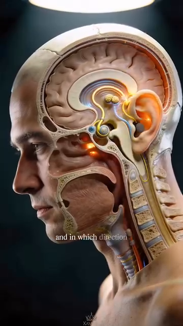 |
| 9 | Cận cảnh ống bán khuyên có chứa dịch |
Hình 10–15 — Vi thể (Tế bào lông, Nội dịch, Chỏm nhầy)¶
| Hình | Mô tả | Ảnh |
|---|---|---|
| 10 | Thành ống có tế bào lông hiển vi | 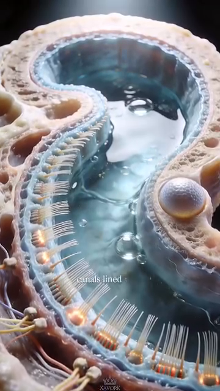 |
| 11 | Nội dịch di chuyển khi đầu nghiêng | 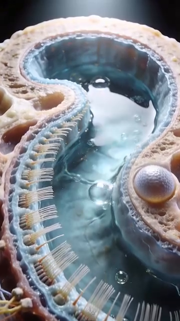 |
| 12 | Đầu nghiêng kích hoạt ống | |
| 13 | Tế bào lông uốn cong | |
| 14 | Chuyển đổi cơ học sang điện — khớp thần kinh | 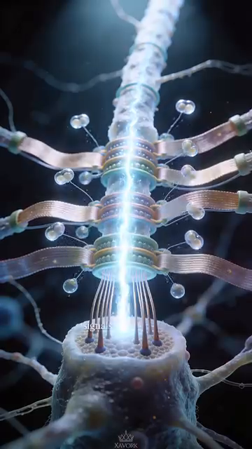 |
| 15 | Xung thần kinh truyền lên thân não |
Hình 16–24 — Phản xạ tiền ý thức¶
| Hình | Mô tả | Ảnh |
|---|---|---|
| 16 | Phản ứng trước ý thức | |
| 17 | Kích hoạt trước khi ngã | 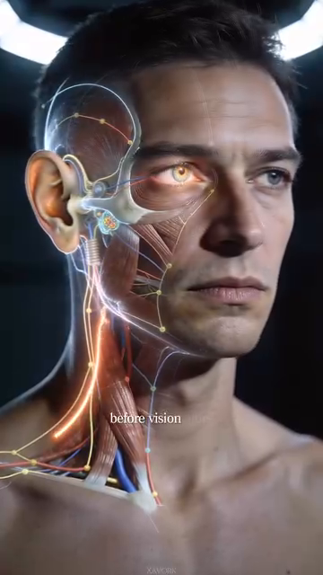 |
| 18 | Trước khi thị giác mờ | |
| 19 | Trước khi nhận thức có ý thức | 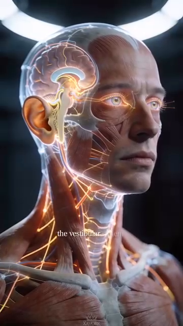 |
| 20 | Phối hợp với mắt và cơ | 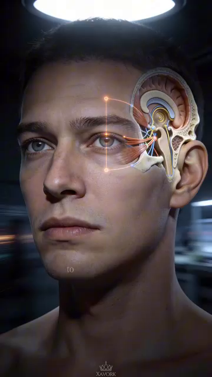 |
| 21–24 | Điều chỉnh mắt, ổn định tầm nhìn, đi bộ | 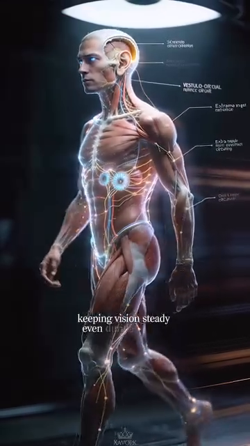 |
Hình 25–35 — Bệnh lý và thích nghi¶
| Hình | Mô tả | Ảnh |
|---|---|---|
| 25–28 | Hậu quả khi mất chức năng tiền đình (mất ổn định khi đi, khó đứng, chóng mặt) | 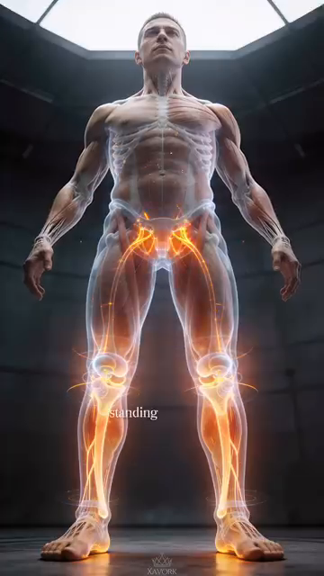 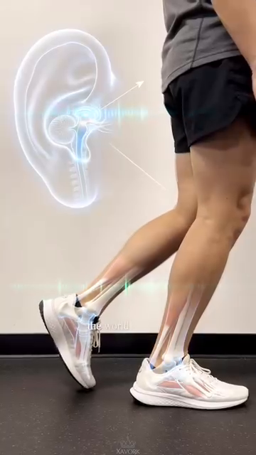 |
| 29–31 | Viêm, tác động của căng thẳng, chóng mặt, buồn nôn | 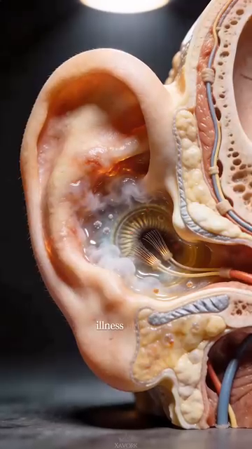 |
| 32–35 | Thích nghi qua vận động, tính dẻo, phục hồi | 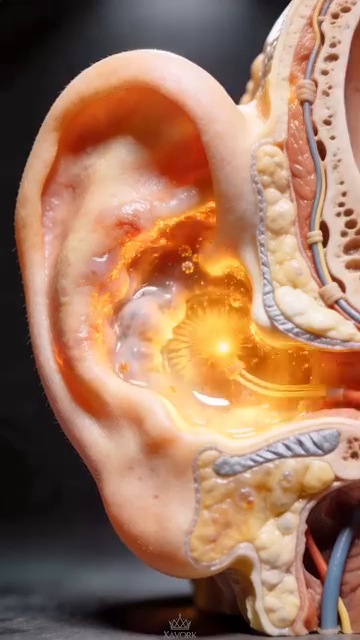 |
Hình 36–48 — Tóm tắt chức năng¶
| Hình | Mô tả | Ảnh |
|---|---|---|
| 36–40 | Tính dẻo và phục hồi qua tiếp xúc | 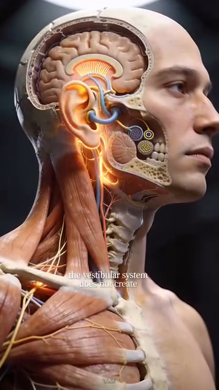 |
| 41–48 | Kiểm soát định hướng, dẫn đường thầm lặng, duy trì tư thế | 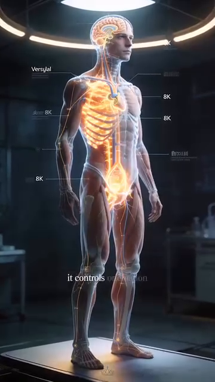 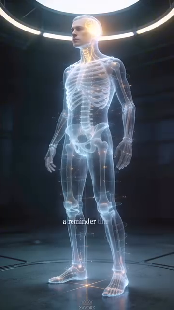 |
Hình 49–96 — Tennis Anatomy PDF Ch.7, Ch.9 (Bài tập vận động)¶
Đây là các hình ảnh quần vợt được dựng 3D. Xem tệp 49–96 trong Anatomy_Lab/images/DD8_control_system/ (lưu ý: đây là các hình trích xuất từ Tennis Anatomy PDF có chứa sơ đồ kỹ thuật cú đánh quần vợt không có nhãn tiền đình rõ ràng — chúng hữu ích làm tài liệu tham khảo cho chuỗi động học, không phải hệ tiền đình).
Tất cả tên tệp hình ảnh đã được xác minh tồn tại trong Anatomy_Lab/images/DD8_control_system/.
🔗 THAM CHIẾU CHÉO¶
| Chủ đề trong DD8 | Xem thêm |
|---|---|
| Tiền đình + thăng bằng | DD7 Mắt cá chân & Bàn chân — 7.000 đầu mút thần kinh, phản xạ bàn chân 30 ms |
| Thị giác + theo dõi bóng | DD1 Người chơi trong chuyển động — 6 góc quan trọng tại điểm tiếp xúc |
| Bản thể + tự động điều chỉnh | DD5 Hông & Đùi — cơ xoay sâu, cơ mông giữa |
| Chu trình thị giác 5 pha | DD1 Người chơi trong chuyển động — bước tách, tiếp xúc 45° |
| Suy giảm thời gian phản xạ | DD6 Đầu gối — nguy cơ ngã, cảm giác vị trí khớp |
| Bộ ba giác quan tuổi 50+ | DD6 Đầu gối — bản thể trong phòng ngừa ACL |
| Dùng thì còn, không dùng thì mất | DD5 Hông & Đùi — cơ xoay sâu trở nên "câm" khi không dùng |
📚 NGUỒN¶
| Nguồn | Loại | Đóng góp gì |
|---|---|---|
Human anatomy/Anatomy_He_Tien_Dinh_Full.docx |
Ghi chú tiếng Việt của người dùng (48 hình) | Giải phẫu hệ tiền đình (5 thành phần), đường dẫn thần kinh (CN VIII → thân não → tiểu não → vỏ não), 4 đường dẫn đầu ra, phản xạ 30 ms, bệnh lý (chóng mặt, bệnh Ménière), tính dẻo và thích nghi qua vận động |
Tennis Knowledge/7.Tennis Books in pdf/Tennis Anatomy ( PDFDrive ).pdf Ch.9 (Bài tập vận động) |
Sách tham khảo | Bài tập phản xạ, huấn luyện thăng bằng, bài tập bản thể |
Human anatomy/Giai_phau_Ban_chan_Tennis.docx |
Ghi chú tiếng Việt của người dùng | 7.000 đầu mút thần kinh, phản xạ 30 ms, bản thể bàn chân |
| Nghiên cứu của Tiến sĩ Joan Vickers | Tham chiếu cho Mắt tĩnh lặng | Hiện tượng Mắt tĩnh lặng ở vận động viên chuyên nghiệp |
| Tài liệu phục hồi chức năng tiền đình | Tham chiếu cho huấn luyện VOR | Ổn định tầm nhìn, huấn luyện thăng bằng lại |
Hết DD8 — Hệ thống điều khiển
Hết Thư viện Phòng thí nghiệm Giải phẫu
Tiếp theo: ReadMe.md với Những gì MỚI, Những gì KHÔNG, lộ trình đọc